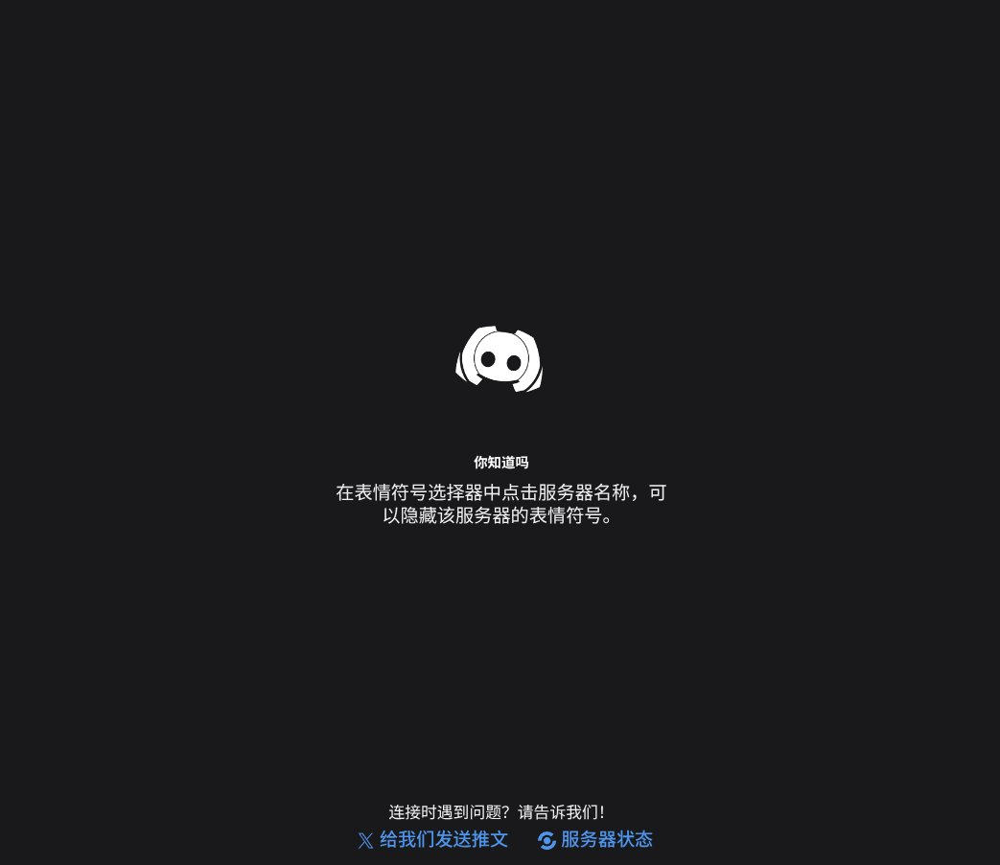

笨蛋夜星吃芒果
@appleneko2001
@Ak1raQ_love Meanwhile in Russia:

Akiramenai💫
@Ak1raQ_love
你说中国大陆的国际网络连接咋就低人一等呢，有墙不说了，搞VPS代理还得找好一点的线路，刚弄了一个日本的VPS，reality弄半天连上速度20kb/s都给我气笑了，结果一用漫游测下速直接10mb/s，这说明问题不出在VPS网络啊，反正退款了